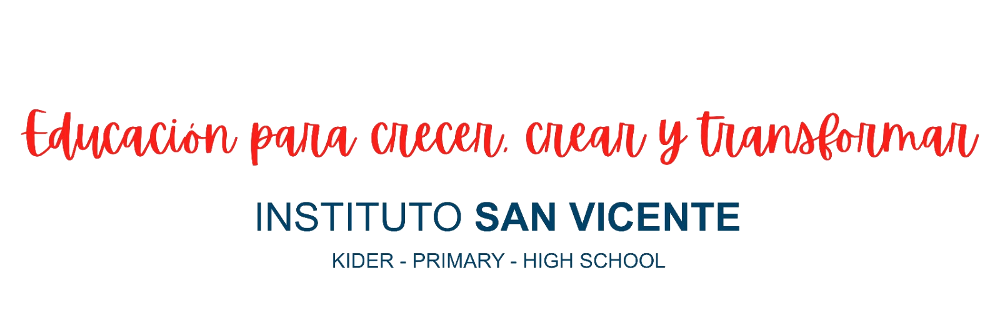
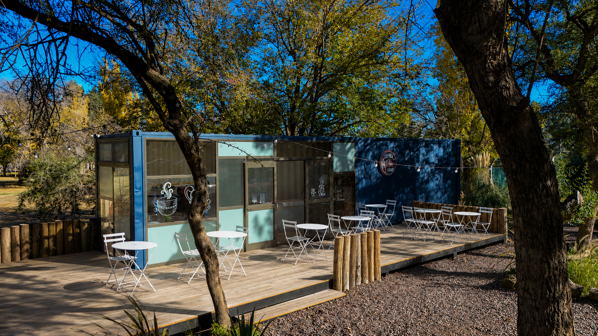
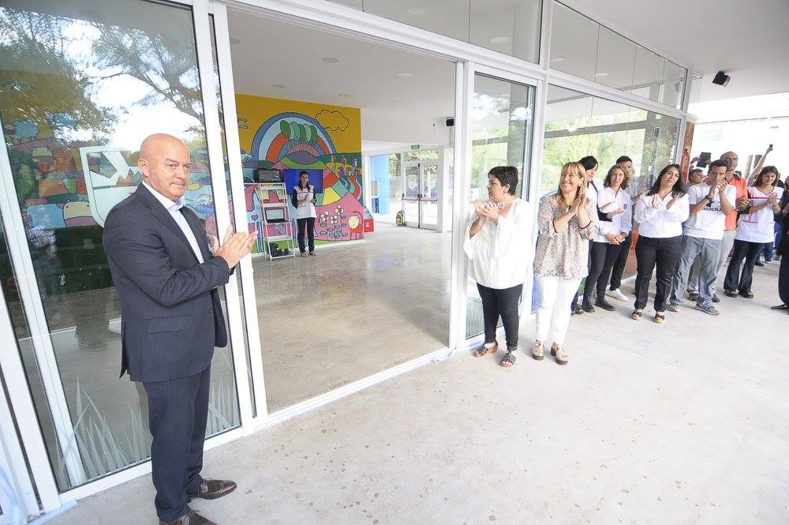
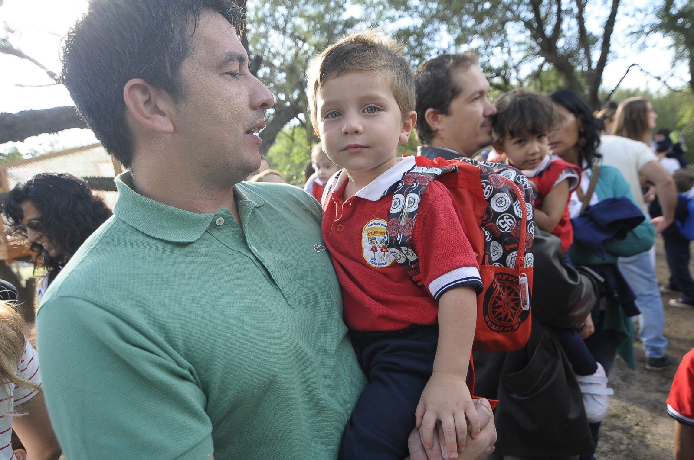
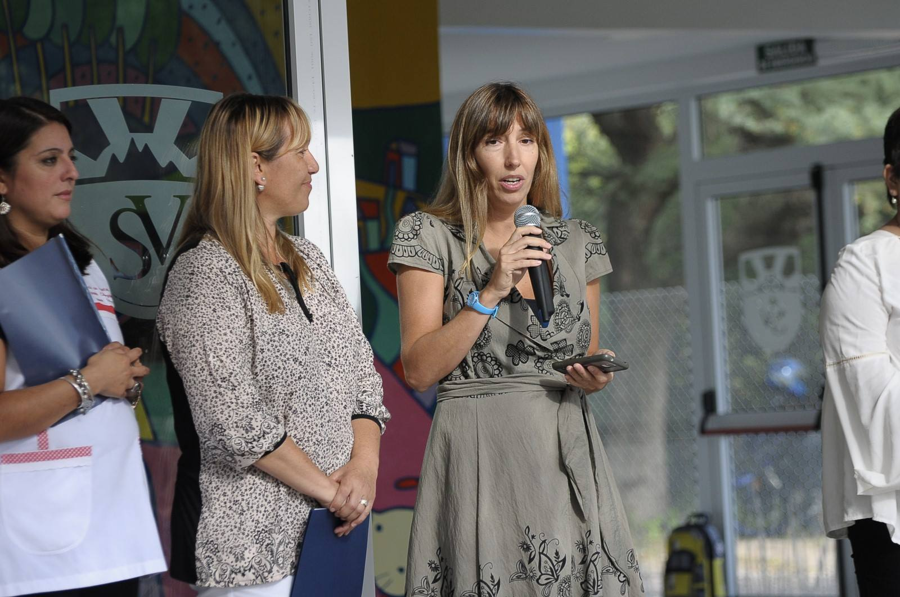
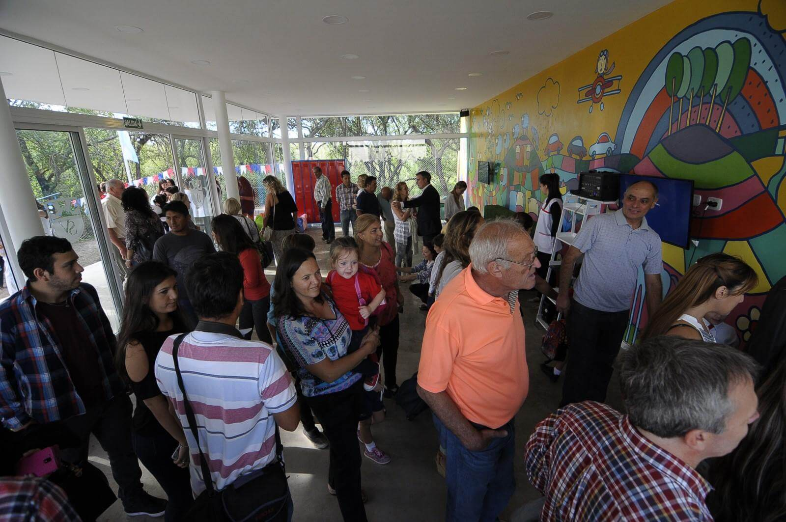

Una institución de Nivel Inicial, Primario y Secundario pensada para que cada estudiante aprenda, disfrute y desarrolle al máximo sus capacidades.
PENSADOS PARA APRENDER
SEGUROS Y ACOGEDORES
PARA CRECER Y CREAR



Un proyecto educativo que nació con el deseo de crear un espacio diferente para aprender, crecer y sentirse parte.
En 2014 comenzamos a construir el Instituto San Vicente con una visión clara: ofrecer a las familias de San Luis y Juana Koslay una educación moderna, cercana y pensada para los desafíos del presente y del futuro.

Desde el primer día soñamos con una escuela donde cada estudiante pudiera aprender con alegría, desarrollar su potencial y crecer acompañado en cada etapa.

Incorporamos doble escolaridad, inglés, deportes, arte, tecnología y educación emocional como parte de una formación integral, activa y humana.

Creemos en una educación que forme personas autónomas, creativas, comprometidas y capaces de transformar su realidad.

Solicitá una entrevista con nuestro equipo directivo y conocé nuestra propuesta de Nivel Inicial, Primario y Secundario.